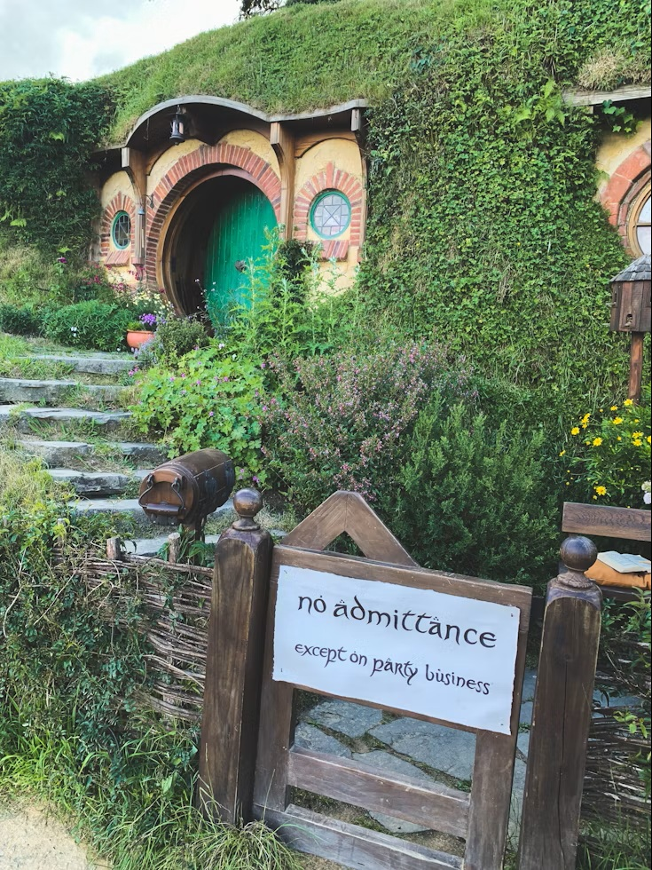
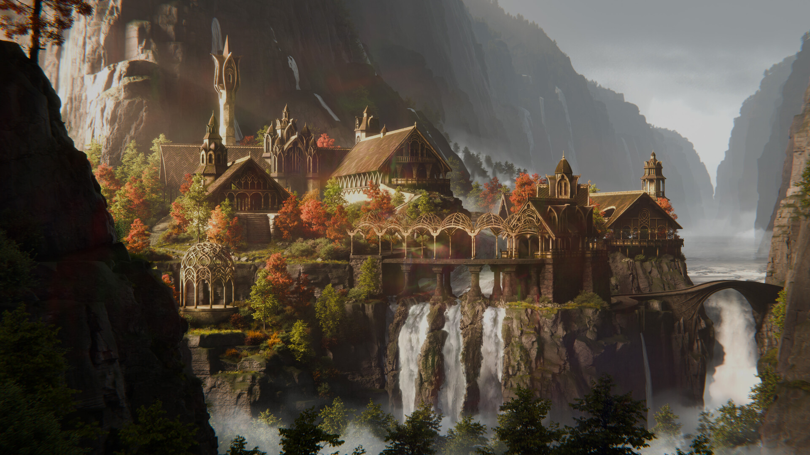

The Shire

The Shire is a peaceful land filled with rolling green hills, gardens, and cozy Hobbit homes. It is a quiet place where Hobbits enjoy simple things like good food, friends, and a comfortable home.
Middle-earth is filled with beautiful and interesting places to visit. Here are a few stops worth making along your adventure.
Some places are peaceful and welcoming, while others are perfect stops for travellers looking for rest, food, or a little adventure.

The Shire is a peaceful land filled with rolling green hills, gardens, and cozy Hobbit homes. It is a quiet place where Hobbits enjoy simple things like good food, friends, and a comfortable home.

Rivendell is a beautiful elven refuge hidden among mountains, forests, and waterfalls. It is a peaceful place where travellers can rest, learn, and prepare before continuing their journey.
The Prancing Pony is a well-known inn located in the village of Bree. Travellers stop there for food, drinks, a warm bed, and news from the road before continuing their adventure.